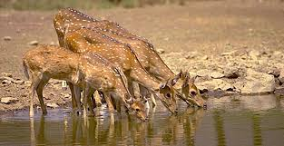

Wildlife & Wetlands

Rajasthan's wildlife and wetlands are protected in its numerous national parks, wildlife sanctuaries, and Ramsar sites, which are home to diverse species like tigers, blackbucks, and various birds. Key locations include Keoladeo National Park, a UNESCO site and Ramsar wetland, and Ranthambore and Mukundara Hills National Parks, which are also tiger reserves. The state also has designated wetland areas like the Menar Wetland Complex, showcasing a commitment to conservation and a rich biodiversity.
Wildlife
- Keoladeo National Park:
A UNESCO World Heritage Site famous for its birdlife.
- Ranthambore National Park:
A prominent tiger reserve.
- Mukundara Hills National Park:
A tiger reserve consisting of multiple wildlife sanctuaries.
-
Sariska national park:
Another tiger reserve in the Aravalli Range.
- Tal Chhapar Sanctuary:
Known for blackbucks and migratory birds.
- Ramgarh Vishdhari Sanctuary:
Home to leopards, sambar deer, chitals, and chinkaras.
- Sajjangarh Biological Park:
A zoo and biological park in Udaipur.
Wetlands
- Keoladeo National Park:
A significant wetland and bird sanctuary.
- Menar Wetland Complex:
A Ramsar site known for its biodiversity.
- Bassi Wildlife Sanctuary:
Contains wetland areas supporting diverse flora and fauna.
- Sambhar Lake
India's largest inland salt lake and a Ramsar site.
- Udaipur Jheel
A series of interconnected lakes in Udaipur.
Conservation efforts
- Protected Areas:
The state has a comprehensive network of protected areas, including five national parks, 25 wildlife sanctuaries, and several conservation reserves.
- State Wetland Authority:
The government of Rajasthan has a State Wetland Authority (SWAR) to manage and conserve wetlands.